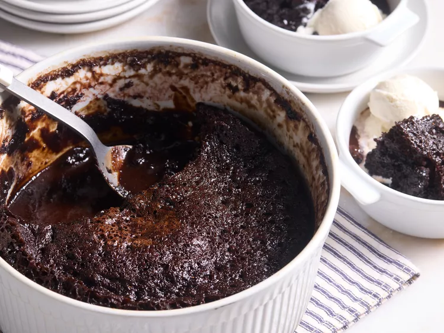

Microwave Chocolate Pudding Cake
This microwave chocolate pudding cake is chocolatey, rich, and indulgent with both a pudding layer and a cake layer.

Ingredients
Toppings
- 1 1/2 cups hot water
- 1 cup packed dark brown sugar
- 1/4 cup unsweetened cocoa powder
- 1/4 cup salted butter, cubed
Cake
- 1 cup all purpose flour
- 1 cup white sugar
- 1/3 cup unsweetened cocoa powder
- 1 1/2 teaspoons baking powder
- 1/2 teaspoon kosher salt
- 1/2 teaspoon instant espresso coffee powder
- 1 cup milk
- 1 teaspoon vanilla extract
- 1 cup vanilla ice cream, or to taste
Steps
- Topping
- Combine hot water, brown sugar, 1/4 cup cocoa powder, and butter in a microwave-safe bowl. Microwave on high until bubbly, 4 minutes.
- Cake
- whisk together flour, white sugar, 1/3 cup cocoa powder, baking powder, salt, and instant espresso powder in a 2-quart round casserole dish. Add milk and vanilla; whisk until smooth.
- Gather all ingredients.
- Pour topping over the cake batter, they will flow together.
- Microwave on high until the cake is on top of the sauce, 8 to 10 minutes.
- Serve warm topped with vanilla ice cream.
Return